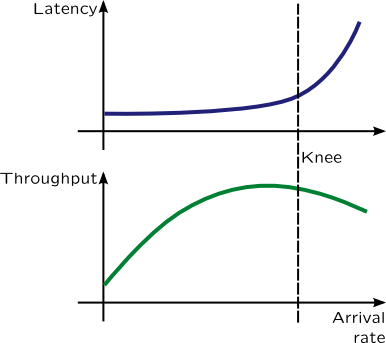

Performance analysis
Computer users, system administrators and developers are interested in improving of performance of computer systems and dynamic tracing languages are very handful in analysing soft spots of computer systems. We will use two characteristics of computer system to evaluate its performance most of the time: throughput and time spent for servicing request (usually referred as latency). These two characteristics depend on each other as following picture shows:

Information
For example, let's imagine a newspaper kiosk. Than number of customers per hour will be its arrival rate. Sometimes, when clerk is busy while servicing customer, other customers will form a queue, which can is measurable to queue length. Growing queues is a sign of the system's saturation. Throughput of the kiosk is the number of customers which bought a newspaper per hour. However, if number of customers is too large, kiosk couldn't service them all, and some of them will leave after waiting in line -- they are treated as errors. When kiosk reaches its saturation point or the knee, throughput of the kiosk will fall, and number of errors will increase, because clerk will be tired.
Latency consists of service time which depends on many factors: i.e. if customer need change or clerk can't find copy of newspaper it will grow, and waiting time -- time spent by a customer waiting in queue. Utilization is defined by a fraction time that clerk spends servicing their customers. I.e. if clerk spends 15 minutes to sell a magazines or newspapers per hour, utilization is 25%.
These definitions are part of queueing theory which was applied to telephone exchange, but it is also applicable to computer systems. Either network packet or block input-output operations may be considered as request, while corresponding driver and device are considered as servers. In our kiosk example, customer were the requests while clerk at the kiosk was the server.
To measure throughput we have to attach a probe to one of the functions responsible for handling requests, and use count() aggregation in it. It is preferable to use the last function responsible for that, because it will improve data robustness. Using a timer, we will print the aggregation value and clear it. For example, throughput of disk subsystem may be measured using following SystemTap script:
# stap -e ' global io;
probe ioblock.end {
size = 0
for(vi = 0; vi < $bio->bi_vcnt; ++vi)
size += $bio->bi_io_vec[vi]->bv_len;
io[devname] <<< size
}
probe timer.s(1) {
foreach(devname in io) {
printf("%8s %d\n", devname, @sum(io[devname]));
}
delete io;
}'
Or with DTrace:
# dtrace -n '
io:::done {
@[args[1]->dev_statname] = sum(args[0]->b_bcount);
}
tick-1s {
printa(@);
clear(@);
}'
To measure arrival rate, on contrary, we need first functions which handle request "arrival" which are in our case ioblock.request and io:::start correspondingly. These probes will be covered in Block Input-Output section.
Latency measurement is a bit more complicated. We will need to add probes to request arrival and final handler and calculate time difference between these two moments. So we need to save a timestamp of a request arrival and retrieve it at the final handler probe. The easiest way to do that is thread-local variables, but it is not guaranteed that final handler will be called from same context request was created from. For example, final handler may be called from IRQ handler thread. In such cases we will need associative arrays and a unique request key retrievable on both sides, which is usually an address of requests descriptor in memory. For block input-output is struct buf in Solaris and struct bio in Linux. So let's calculate mean latency in SystemTap:
# stap -e ' global start, times;
probe ioblock.request {
start[$bio] = gettimeofday_us();
}
probe ioblock.end {
if(start[$bio] != 0)
times[devname] <<< gettimeofday_us() - start[$bio];
delete start[$bio];
}
probe timer.s(1) {
printf("%12s %8s %s\n", "DEVICE", "ASVC_T", ctime(gettimeofday_s()));
foreach([devname] in times) {
printf("%12s %8d\n", devname, @avg(times[devname]));
}
delete times;
}'
Similar script is for DTrace:
# dtrace -qn '
io:::start {
iostart[arg0] = timestamp;
}
io:::done {
@rq_svc_t[args[1]->dev_statname] = avg(timestamp - iostart[arg0]);
}
tick-1s {
printf("%12s %8s %Y\n", "DEVICE", "ASVC_T", walltimestamp);
printa("%12s %@8d\n", @rq_svc_t);
clear(@rq_svc_t);
} '
Utilization may be measured similar to a profiling: high-resolution timer determines if server is busy or not, so utilization will be busy ticks to all ticks ratio. Queue length may be modelled from arrival rate and dispatch rate, but in many cases it is explicitly accessible from kernel or application data.